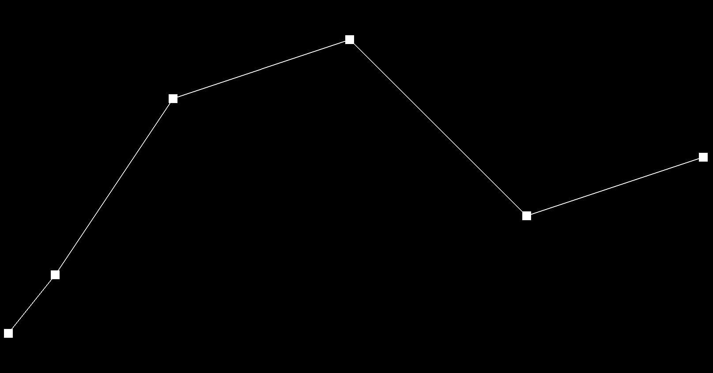
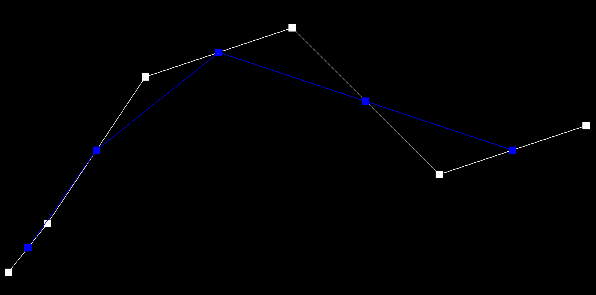
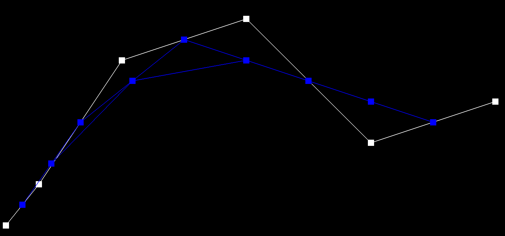
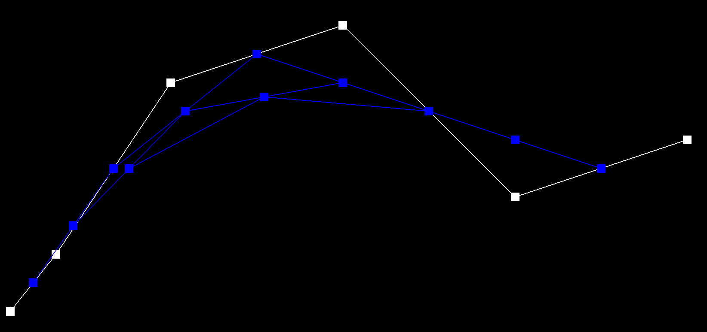
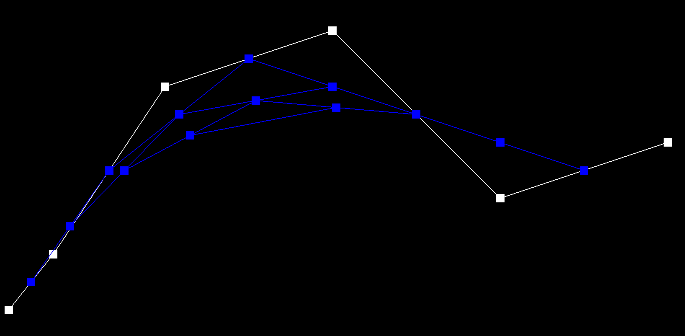
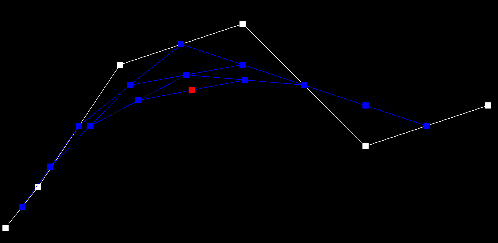
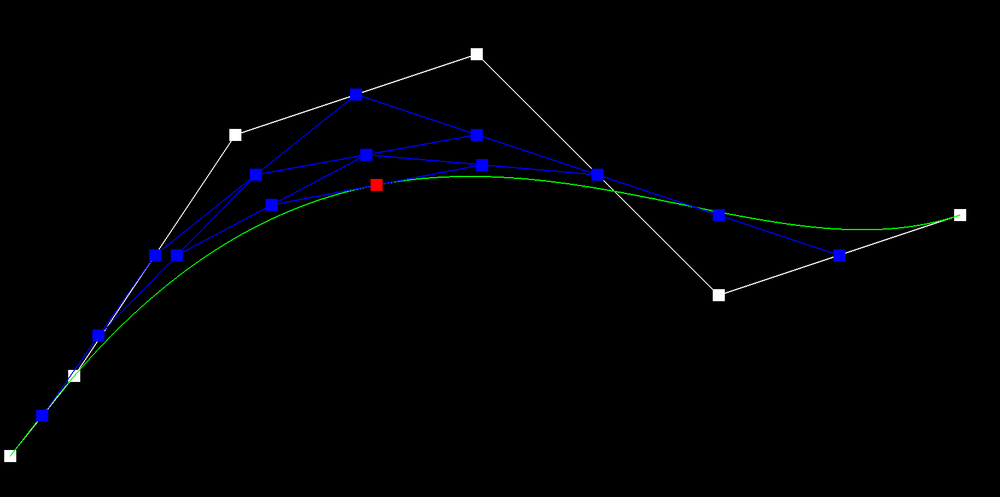

CS184/284A Spring 2025 Homework 2 Write-Up
Link to webpage: (TODO) cs184.eecs.berkeley.edu/sp25
Link to GitHub repository: (TODO) cs184.eecs.berkeley.edu/sp25

Overview
Bezier Curves and Surfaces:
I learned to implement the de Casteljau algorithm for evaluating Bezier curves by recursively interpolating control points. For surfaces, I extended this algorithm in two stages: first for rows of control points and then for the final interpolation between them.
Triangle Meshes and Half-Edge Data Structure
I implemented operations like area-weighted vertex normals, edge flips, and edge splits. These involved working with the half-edge data structure to modify the mesh topology. Debugging these operations included visualizing the changes by drawing the process.
Loop Subdivision for Mesh Upsampling
I implemented Loop subdivision to smooth meshes by refining vertices and edges. I dealt with issues like infinite loops and misbehaving splits, using the Visual Studio debugger.
Section I: Bezier Curves and Surfaces
Part 1: Bezier curves with 1D de Casteljau subdivision
Briefly explain de Casteljau’s algorithm and how you implemented it in order to evaluate Bezier curves.
A Bezier curve is a parametric curve that smoothly interpolates between control points using a weighted combination of those points. It works similarly to the vector tool in Adobe Illustrator, where handles influence the shape of the curve. Given a set of control points, we can compute the curve using a recursive linear interpolation (lerp) formula:Take a look at the provided .bzc files and create your own Bezier curve with 6 control points of your choosing. Use this Bezier curve for your screenshots below. Show screenshots of each step / level of the evaluation from the original control points down to the final evaluated point. Press E to step through. Toggle C to show the completed Bezier curve as well.
|  |  |  |  |
|  |  |  |
Show a screenshot of a slightly different Bezier curve by moving the original control points around and modifying the parameter t via mouse scrolling.
Part 2: Bezier surfaces with separable 1D de Casteljau
Briefly explain how de Casteljau algorithm extends to Bezier surfaces and how you implemented it in order to evaluate Bezier surfaces.
The de Casteljau algorithm is commonly used to evaluate Bezier curves by recursively interpolating between control points until only one point remains. This concept extends to Bezier surfaces, which are made up of a grid of control points, by applying the same idea in two stages: first for one set of control points, and then for the results of the first stage.In my implementation, I applied the de Casteljau algorithm to evaluate a Bezier surface in two steps:
Step 1 - Interpolation between control points: For each row of control points in the grid, I used the de Casteljau algorithm to calculate intermediate points by repeatedly interpolating between adjacent control points, continuing until only one point remains for each row.
Step 2 - Final interpolation: Once I had the intermediate points from Step 1, I applied the de Casteljau algorithm again to these points, which gives the final point on the Bezier surface.
Show a screenshot of bez/teapot.bez (not .dae) evaluated by your implementation.
Section II: Triangle Meshes and Half-Edge Data Structure
Part 3: Area-weighted vertex normals
Briefly explain how you implemented the area-weighted vertex normals.
I implemented the area-weighted vertex normals by first traversing the halfedges connected to the vertex using a do while loop. For each triangle, I calculate the area using the cross product of its edges and weight the triangle's normal by this area. The weighted normals are summed, and the result is normalized to produce the final vertex normal.
Show screenshots of dae/teapot.dae (not .bez) comparing teapot shading with and without vertex normals.
Part 4: Edge flip
Briefly explain how you implemented the edge flip operation and describe any interesting implementation
I implemented the edge flip operation by first identifying the key elements involved: the two triangles sharing the edge, their vertices, and their associated halfedges. I then updated the halfedge connections to reflect the new topology after the flip. Unfortunately, it's not a particularly interesting approach, haha.
Show screenshots of the teapot before and after some edge flips.
Write about your eventful debugging journey, if you have experienced one.
I drew out the flip operation step by step, and it was really helpful for figuring out which edges and vertices needed to be adjusted. Debugging in VSCode was a bit tricky without a clear idea of where I wanted the edges to end up, so sketching it out made things a lot easier.
Part 5: Edge split
Briefly explain how you implemented the edge split operation and describe any interesting implementation
I implemented the edge split operation by first identifying the key elements around the edge, like halfedges, vertices, edges, and faces. I then created the new elements needed for the split and updated all the pointers to match the new structure. Once again, nothing too exciting about the implementation.
Show screenshots of a mesh before and after some edge splits.
Show screenshots of a mesh before and after a combination of both edge splits and edge flips.
Write about your eventful debugging journey, if you have experienced one.
Just like with the flip operation, I sketched out the points and vertices step by step to keep track of everything. I went through several versions, most of which I ended up tossing out in frustration. However, one of my rougher sketches stuck around, the one shown above, which I believe outlines the correct implementation.
Part 6: Loop subdivision for mesh upsampling
Briefly explain how you implemented the loop subdivision and describe any interesting implementation / debugging tricks you have used.
For the Loop subdivision, I started by marking all the original edges as old (isNew = false) and calculated the new vertex positions for each edge. Each new vertex's position was set using the weighted average of the endpoints and their neighboring vertices.
Next, I iterated through the original vertices to compute their new positions as a weighted sum of their neighbors' positions. The weighting factor depended on the vertex's degree, ensuring smoother geometry.
When splitting the edges, I made sure to split only the original edges to avoid infinite loops. After each split, I assigned the new vertex its precomputed position.
Lastly, I identified new edges with exactly one new vertex and flipped them to maintain proper connectivity. After finishing the operations, I updated all vertex positions and reset their isNew status.
I didn't have too many problems debugging. Most of the time, if I encountered a bug, it was due to an infinite loop caused by a bad condition I had set. There was also a time I had to double-check my split operation because some edges weren't splitting properly — turns out I had mistakenly assigned a pointer to the wrong spot. Which this time, I heavily used the Visual Studio debugger to step through the code rather than drawing a sketch of the process.
Take some notes, as well as some screenshots, of your observations on how meshes behave after loop subdivision. What happens to sharp corners and edges? Can you reduce this effect by pre-splitting some edges?
As Loop subdivision progresses, hard edges tend to smooth out. As you continue dividing, the shape becomes smoother due to the increasing number of triangles. I did some pre-splitting on the cow's ears and found that it seemed to improve the surface smoothing, especially in the surrounding triangles.
Load dae/cube.dae. Perform several iterations of loop subdivision on the cube. Notice that the cube becomes slightly asymmetric after repeated subdivisions. Can you pre-process the cube with edge flips and splits so that the cube subdivides symmetrically? Document these effects and explain why they occur. Also explain how your pre-processing helps alleviate the effects.
When performing Loop subdivision on a cube, the shape starts to lose its symmetry after a few iterations. This happens because the original mesh has some uneven edge lengths and vertex connections, which become more noticeable with each subdivision step.
After flipping and splitting certain edges, it helped balance the mesh structure, allowing the cube to maintain a more symmetric and smoother shape throughout the subdivision process. The final result is a cleaner and more visually consistent model.